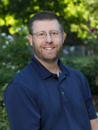

Keynote
Cyberinfrastructure and the Critical Role of Engineering Partnerships for Science Discovery

Dr. Scotty Strachan,
Office of Information Technology and College of Science
University of Nevada, Reno
Abstract
Technology with innovation continues to drive discovery in all aspects of academic research. Whether it be biomedical breakthroughs, next-generation traffic engineering, global climate research, or species adaptation, each field of domain science has become increasingly dependent on complex technologies to scale and iterate. The technologies that enable networking, information acquisition, analysis, and visualization have become ubiquitous, so much so that automation of one kind or another is being increasingly applied in most scientific workflows. This brings two key pieces of functional cyberinfrastructure into focus: software-defined everything, and data management for reusability. On one hand, you have communities of researchers building systems to capture unprecedented volumes of data, and on the other you have even more people wishing to access and synthesize these both in near real time as well as much later. Science has outstripped its ability to properly manage data ‐ some would argue this happened a long time ago. Regardless, the value of data gathered for scientific purposes is only as good as its proximity to use (computing) and its provenance (metadata). Because of the danger of misapplication, scientists of all fields now need tools and standards that allow for rapid data interchange as well as evaluation of comparability. Because each domain can produce unique types of data, close partnerships between software engineers, data management specialists, and domain scientists are needed more than ever. In this keynote, we demonstrate and discuss the clear need for cross-domain partnerships that can build effective cyberinfrastructure to accelerate the scientific discovery process.
Bio
Scotty Strachan is Director of Cyberinfrastructure at the University of Nevada, Reno, the state's land-grant institution. He received his Ph.D. in Geography with a Graduate Minor in Business Administration from the University of Nevada in 2016. Scotty's research focus is in ecohydrology and sensor networks, and he is also Director of the Nevada Climate-ecohydology Assessment Network, a $5M state-of-the-art mountain gradient observatory in the Great Basin ecoregion. Scotty has successfully obtained NSF funding for domain research in the climate sciences as well as campus cyberinfrastructure, and his work has been published in peer-review journals covering atmospheric research, remote sensing, water resources, paleoclimate, and archaeology. Scotty co-chairs the EnviroSensing Cluster in the Earth Science Information Partners Federation, and is the co-organizer of the biennial MtnClim mountain climate conference. Scotty's work in these fields is internationally recognized, and he has given invited talks in academic venues from Switzerland to New Hampshire.